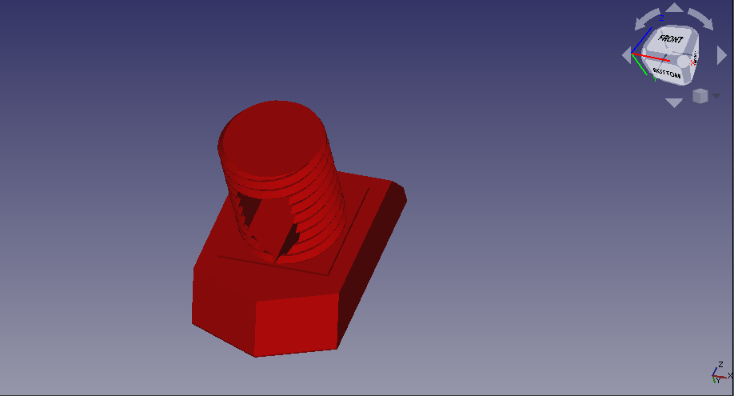

Este proyecto es una modificacion a mi impresora una ender 3 para que esta sea capaza de funcionar como una CNC, lo que hice fue imprimir
este adaptador (Version 4 para la ender 3) pues es una modificacion que me permitira hacer que a la ender 3 se le puedan montar varias herramientas de forma rapida sin tener la preocupacion que lo que se valla a montar no quede centrado.
Como la quiero hacer una CNC necesito un adaptador para el motor que tengo que seria el
GS-775M, encontre un diseño de ese motor en internet y en base a ese pude hacer
este diseño, se imprime con soportes y yo recomiendo una relleno +20% con +2 paredes, el diseño funciona muy bien y si puede soportar el motor sin tener vibraciones.
Lo malo de este diseño es que no tuve en vuenta la distancia de la broca a la placa, lo esoty ocupando para hacer circuitos impresos, y para esto tuve que incorporar una extension en cura la cual me permite agregar una separacion entre el extrusor y la cama directamente en el
G-code *en mi caso (pues coloco una tabla de madera para protger la cama de la ender 3 de la broca) de mas de 2 cm*
Tambien diseñe una adaptador para diferentes tipos de plumas o lapices para este adaptador basado en
este modelo, para que funcione solo necesitas descargar la tuerca desde la pagina original y
mi adaptacion
